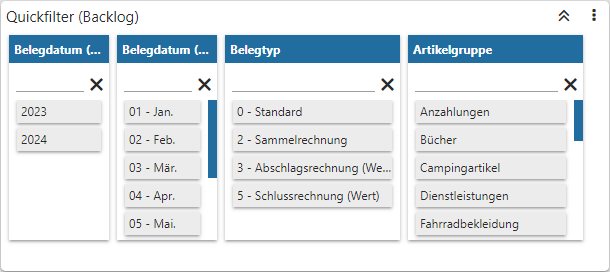
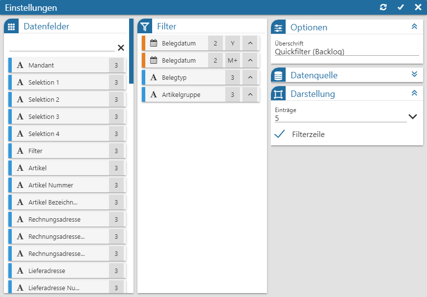
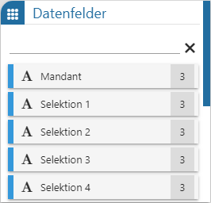
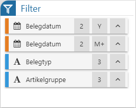
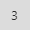
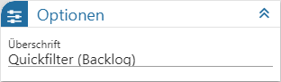
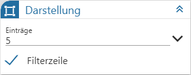

Power Report - Widgets - Quickfilter

Das Widget "Quickfilter" dient zur schnellen und komfortablen temporären Selektion von Daten. Über die Einstellungen wird zunächst definiert, wonach gefiltert werden soll. Die Quickfilterung selber wird dann durch einen Klick auf ein Element ausgelöst, wobei auch mehrerer Datenbereiche miteinander kombiniert werden können:
ü Mausklick auf ein oder mehrere
Elemente eines Datenbereichs
Es wird ein ODER-Filter für den Datenbereich
gebildet und angewendet.
ü Mausklick auf ein oder mehrere
Elemente unterschiedlicher Datenbereiche
Innerhalb eines jedes Datenbereichs
wird ein ODER-Filter gebildet. Die einzelnen Datenbereiche werden anschließend
mit einer UND-Bedingung verbunden und die Filterung angewendet.
Achtung
Neben dem Widget "Quickfilter" kann eine Quickfilterung auch direkt durch das Arbeiten im Power Report ausgelöst werden:
ü Mausklick auf die Zahl eines
Kachel-Widgets
Es wird der Widget-Filter der Kachel als Quickfilter
verwendet.
ü Mausklick auf ein Element in dem
Grafik- oder Tag Cloud-Widget
Es wird ein Filter gebildet und angewendet.
ü STRG-Taste + Mausklick auf mehrere
Elemente in dem Grafik-Widget
Es wird ein ODER-Filter gebildet und
angewendet.
ü STRG-Taste + Mausklick auf
Elemente in unterschiedlichen Widgets (ausgenommen "Tabelle" und "Olap")
Es
wird ein UND-Filter gebildet und angewendet.
ü Mausklick auf einen Eintrag eines
Kalender-Widgets
Wenn ein Filterfeld in den Einstellungen definiert wurde, so
wird ein Filter gebildet und angewendet.
ü Mausklick auf eine Zahl (Measure)
eines Olap-Widgets
Es wird ein Filter anhand der gewählten Spalte und Zeile
gebildet und angewendet.
ü Mausklick auf die Beschriftung
einer Kachel des Kanban-Widgets
Wenn ein Filterfeld in den Einstellungen
definiert wurde, so wird ein Filter gebildet und angewendet.
ü Aktivieren der Checkbox der
wünschten Zeilen einer Tabelle + Funktion "Tabellen Selektion"
Es wird ein
ODER-Filter über alle auswählten Tabellenzeilen gebildet und angewendet.
Hinweis
Ob ein Quickfilter aktiv ist, wird jederzeit in der Power Report-Kopfleiste angezeigt.
ü  - kein Filter
- kein Filter
Im Power Report wird
aktuell kein Quickfilter angewendet.
ü  - aktiver Filter
- aktiver Filter
Im Power Report wird
auf zumindest einer Datenquelle ein Quickfilter angewendet. Durch Anwahl des
Buttons wird dieser entfernt.
Einstellungen

Folgende Eingabefelder, Einstellungen und Informationen stehen zur Verfügung:
Datenfelder

Ø Tabelle "Datenfelder"
In dieser Tabelle werden alle Felder der Datenquelle dargestellt, welche per Drag & Drop in die Tabelle "Filter" übergeben werden können. Der Power Report unterscheidet hierbei nach den folgenden Datentypen:
ü  - Alphanumerisch
- Alphanumerisch
Es handelt sich um ein
Feld mit alphanumerischen Inhalt.
ü  - Bild (Grafik)
- Bild (Grafik)
Es handelt sind um ein
Feld mit einem Bild als Inhalt.
ü  - Datum
- Datum
Es handelt sich um ein Feld des
Typs "Datum", wobei das Darstellungsformat selber bestimmt werden darf. Hierfür
muss nur das Symbol  neben der
Beschreibung des Felds angeklickt werden, wodurch sich die folgende Auswahl
öffnet:
neben der
Beschreibung des Felds angeklickt werden, wodurch sich die folgende Auswahl
öffnet:
Hinweis
Mit Hilfe der Suchzeile kann über eine Volltextsuche nach Datenfeldern gesucht werden, wobei das %-Zeichen als Platzhalter verwendet werden kann.
Tabelle

Ø Tabelle "Filter"
Die hier abgelegten Felder werden als Datenbereiche im Quickfilter dargestellt, wobei die Breite eines jeden Bereichs über das Symbol

individualisiert werden kann. Durch Anwahl des Symbols kann
wiederum der Inhalt des Datenbereich auf- oder absteigend sortiert werden.
kann
wiederum der Inhalt des Datenbereich auf- oder absteigend sortiert werden.
Optionen

Ø Überschrift
An dieser Stelle wird die Bezeichnung des Quickfilters definiert.
Datenquelle

Ø Datenquelle
Dieses Informationsfeld zeigt den Namen der zu Grunde liegenden Datenquelle an.
Ø Datenherkunft
An dieser Stelle kann mit Hilfe einer Auswahlliste definiert werden, aus welchem Bereich der Datenquelle die Daten des Widgets stammen sollen. Die Auswahl "aktuell" steht immer zur Verfügung und spiegelt die im Ausgangsfenster gewählte Datenquelle (temporäre Datenquelle, Snapshot, View oder MasterView) wieder.
Hinweis
Gibt es für die Datenquelle mehrere Snapshots, so sind diese über den Eintrag "xxx (statisch)" (xxx => Name der Auswertung) zusammengefasst. Innerhalb der Snapshots erfolgt die weitere Selektion über den Widget Filter.
Ø  Widget Filter
Widget Filter
Durch Anwahl dieses Buttons wird das Fenster Widget Filter geöffnet. In diesem kann die genutzte Datenquelle nach frei definierbaren Kriterien eingeschränkt werden.
Hinweis
Handelt es sich nicht um eine importiere Datenquelle, so werden die folgenden Selektionskriterien automatisch vorgegeben, wobei ein Editieren selbstverständlich möglich ist:
ü Mandant
Es wird durch die
Filterzeile "Mandant = aktuell" automatisch auf die Daten des aktuellen Mandaten
eingegrenzt.
ü Selektion 1 bis 4 / Filter
Es
wird automatisch auf die Daten jenes Snapshots eingegrenzt, über welchen der
Power Report ausgegeben wurde. Die Filterzeilen hierzu lauten "Selektion X =
aktuell" bzw. "Filter = aktuell".
Hinweis
Mit Hilfe des Widgets Datenquellen Info ist jederzeit nachvollziehbar, was sich gerade hinter "aktuell" verbirgt (Einstellung "Aktuelle Sel.").
Darstellung

Ø Einträge
An dieser Stelle kann die Anzahl der direkt sichtbaren Einträge pro Datenbereich hinterlegt werden.
Ø Filterzeile
Mit Hilfe der Option "Filterzeile" kann definiert werden, ob pro Datenbereich eine Filterzeile zur Verfügung stehen soll.